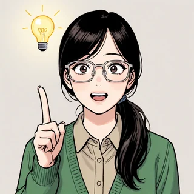

옹알이 루나: 표에서 한 글자씩 뽑아 쓰기
표가 생겼으니 이제 루나에게 말을 시켜 볼 차례다. 첫 글자를 하나 주고, 그 글자의 행에서 다음 글자를 정하고, 정한 글자의 행에서 또 다음 글자를 정하면 된다. 문제는 행마다 후보가 여럿이라는 점이다. 늘 가장 큰 확률의 글자를 고를 수도 있고, 확률에 비례하게 제비를 뽑을 수도 있는데, 어느 쪽이 글다운 글을 쓸까?
선생님은 표에서 글자를 뽑는 법을 먼저 궁리한 사람이 있다며 예전 강의를 꺼냈다.
섀넌이 책장을 넘기며 한 일을 우리는 표의 한 행으로 한다. 행의 확률을 차례로 더해 0에서 1까지의 눈금을 만들고, 0과 1 사이의 난수 하나가 떨어진 칸의 글자를 고른다. 확률이 큰 글자일수록 눈금에서 차지하는 폭이 넓어 자주 뽑힌다. 이렇게 모델의 분포대로 다음 글자를 뽑는 일을 샘플링 (분포대로 뽑기 / sampling)이라 하고, 뽑아 쓴 글을 샘플이라 한다.
# sources/next-token/bigram.py (4절에서. rng 는 시드 1337 로 만든 난수 생성기)
cum = np.cumsum(P, axis=1)
for s in range(5):
out = [ord("O")]
for _ in range(299):
out.append(int(np.searchsorted(cum[out[-1]], rng.random() * cum[out[-1], -1])))
첫 글자는 동화가 거의 늘 「Once」로 시작하니 「O」로 주고, 300글자씩 다섯 번 뽑았다. 그 가운데 첫째와 넷째를 그대로 옮긴다(줄바꿈은 \n 으로 적었다).
[1] On woucames athand t th tot oy. Sury.\n\n"Itom?"\n" thit. The Suis s he cas o wed, sar sad l unck apayom ware bige lairithey, py te'rit wid fro d ay ikeves od unt nonkedr when h ang fo tism cr thets anghilllithed The cked.\nEly thedove he a tom an nt and ba ar ky bim Sp ndeft k the me m bimme.\nThath t n
[4] Onggony nd be ond te. oous, d, m was Tim y ana wed wa as s. sa wane, Tidogigred s recoy maskerous bo, to fire ak. thang my He, Evelis was wand verind.\nOno he wandrem es g aieer a fog I hecax Sooit d at. Sht an coxcllloil thaker as. m lend, tom vered a omed shan heastobiney llthaitony, n o, "\nLuld.\nT
낱말은 거의 없지만 아무 글자나 늘어놓은 것과는 다르다. 낱말 길이쯤마다 공백이 들어가고, 마침표 뒤에는 공백이나 줄바꿈이 오며, 따옴표로 대사를 여는 시늉도 한다. 「The」, 「was」, 「Tim」, 「to fire」, 「my」처럼 짧은 낱말은 우연히 맞기도 한다. 표가 아는 것은 바로 앞 글자뿐이라, 이웃한 두 글자의 규칙은 지키고 그보다 긴 구조는 모른다.

여기 봐, 넷째 끝에 「Lu」. 그리고 가운데에 「ana」도 있어. 루나라고 하려다 만 거 아냐?

「L」 다음에 「u」가 올 확률이 0.149래. 표에 그렇게 적혀 있어.

그러니까. 일곱 번에 한 번은 루나를 부르려고 한다는 거잖아.

그 뒤에 「ld」가 왔거든. 너 지금 옹알이에서 네가 듣고 싶은 말을 듣고 있어.
민준은 넷째 샘플을 화면 맨 위로 끌어올려 두었다.
문제 5. 점심 메뉴 돌림판
학생 식당에서 지난 한 달 동안 고른 메뉴를 세었더니 돈가스 10번, 국수 6번, 비빔밥 4번이었다. 이 비율대로 오늘 메뉴를 정하려고 0 이상 1 미만의 난수를 하나 뽑는다. (가) 확률을 차례로 더한 눈금을 만들고, 난수가 0.62이면 무엇을 고르는지 답하라. (나) 메뉴 순서를 비빔밥, 국수, 돈가스로 바꾸면 같은 0.62로 무엇을 고르는가? 그래도 괜찮은가?
확률은 10/20 = 0.5, 0.3, 0.2니까 눈금은 0.5, 0.8, 1.0이에요. 0.62는 0.5와 0.8 사이라 국수요.

(나)는 눈금이 0.2, 0.5, 1.0이 돼서, 0.62면 돈가스야. 같은 난수인데 답이 바뀌었네.

순서를 바꿨더니 답이 바뀌었어요. 그럼 돌림판이 망가진 걸까요?

음, 망가진 건 아니어도 순서를 하나로 정해 둬야 공정하겠네요. 메뉴 순서에 따라 오늘 점심이 달라지면 곤란하니까요.
오늘 하루는 달라지지. 그런데 한 달 내내 뽑으면? 돈가스는 어느 순서든 눈금에서 0.5만큼 차지하잖아.

아, 난수 하나의 답은 순서 따라 바뀌어도, 메뉴마다 뽑히는 비율은 눈금에서 차지하는 폭이 정하는구나. 폭은 순서를 바꿔도 안 변하고.

그게 코드의 cumsum 이랑 searchsorted 야. 행을 차례로 더해 눈금을 만들고, 난수가 떨어진 칸을 찾는 거. 표의 열이 바이트 번호 순서로 놓인 것도 그래서 상관없고.
문제 6. 늘 가장 흔한 글자만 고르면
바이그램 표의 행마다 가장 큰 칸만 따라가는 그리디 선택(greedy, 늘 1등만 고르기)에는 무작위가 없어서, 첫 글자가 정해지면 글 전체가 정해진다. 행 몇 개의 가장 큰 칸은 아래와 같다. (가) 「O」에서 출발하면 어떤 글이 나올지 짐작해 보고, (나) 실제 결과를 보고 왜 그렇게 되는지 설명하라. (다) 첫 글자를 「L」, 「q」, 「z」로 바꾸면 어떻게 되는가?
‘O’ -> ‘n’ 0.913 · ‘n’ -> ‘d’ 0.288 · ‘␣’ -> ‘t’ 0.149 · ‘t’ -> ‘h’ 0.312 · ‘h’ -> ‘e’ 0.600 · ‘e’ -> ‘␣’ 0.378
따라가 볼게요. O, n, d, 그다음 「d」 행이 표에 없는데… 그림에서 d 다음은 공백이 제일 진했으니까 공백. 그다음 t, h, e, 공백, 다시 t, h, e…
돌려서 확인해 봐요.
## 그리디 선택으로 60 글자 (공백은 그대로 적음)
첫 글자 'O': 'Ond the the the the the the the the the the the the the the '
첫 글자 'L': 'Lind the the the the the the the the the the the the the the'
첫 글자 'q': 'qund the the the the the the the the the the the the the the'
첫 글자 'z': 'ze the the the the the the the the the the the the the the t'

「the」만 끝없이 해요. 어디서 출발해도 몇 글자 만에 다 같은 데로 빠지고요.
공백에서 t, t에서 h, h에서 e, e에서 다시 공백이 각 행의 1등이라, 공백에 한 번 들어가면 빠져나올 수가 없어. 1등 칸만 따라가면 행마다 갈 곳이 하나뿐이니까, 언젠가 지나온 글자를 다시 만나면 그때부터 같은 고리를 돌아.

그래요. 그리디 선택은 글자 하나하나는 가장 흔한 걸 고르는데, 이어 놓은 글은 동화와 전혀 닮지 않아요. 「t」 다음이 「h」일 확률은 0.312뿐이라 나머지 0.688의 이어짐이 모두 버려졌거든요.

루나 무한 반복 모드네요. 옹알이가 차라리 낫다.
제비뽑기는 덜 흔한 이어짐에도 그 확률만큼 자리를 줘요. 그 사이 어딘가에서 고르는 방법들은 루나에게 말을 걸 때 다시 만나게 될 거예요.
낱말 하나를 글자로 보면
글자 대신 공백으로 자른 낱말을 한 덩이로 세면 어떨까? 같은 100MB 에서 낱말은 19,590,139개, 서로 다른 낱말은 67,256개였다. 표의 행이 낱말이 되면 행 하나가 보는 앞 글이 훨씬 길어진다.
'Once' 다음 (76,769 번): 'upon' 0.952, 'there' 0.043, 'they' 0.001, 'the' 0.001, 'she' 0.001, 'he' 0.000
'upon' 다음 (73,329 번): 'a' 0.999, 'an' 0.000, 'the' 0.000, 'something' 0.000, 'time,' 0.000, 'time' 0.000
'Luna' 다음 (1,074 번): 'was' 0.155, 'and' 0.083, 'were' 0.064, 'said,' 0.047, 'saw' 0.040, 'went' 0.039
낱말 바이그램으로 뽑은 글 (첫 낱말 'Once', 40 낱말씩)
[1] Once upon a plan. Sue was magic! Amy twisted the little cat jumped out of magical and free. Max dig, plant was a small house, there was a sudden, Sarah's dad could help his yard. Under the person smiled and
[2] Once upon a long legs. Lily says, "Let me read the green leaves have a time, there was still not believe it. He did not make it could and his bag was very kind. When they have some food was
이번에는 낱말이 모두 진짜 낱말이고, 「Once upon a」까지는 동화의 앞부분와 같다. 그러나 「upon a」 다음에 「time」 대신 「plan」이 오고, 「the little cat jumped out of magical and free」처럼 이웃한 두 낱말씩은 말이 되는데 이어 놓으면 뜻이 없다. 낱말 표도 바로 앞 낱말 하나만 보기 때문이다. 「Luna」는 1,074번밖에 나오지 않아 「Lily」의 84,616번에 한참 못 미쳤다.
이건 루나가 아니라 「Once upon a plan」이네. 한 줄씩은 그럴듯한데.
그래도 글자 표보다는 훨씬 말 같아. 글자 표 대신 이걸 쓰면 되겠다.
그 「훨씬」은 어떻게 측정하는데? 네 눈으로?